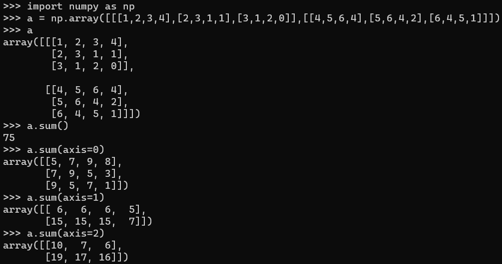

常用python代码
1. numpy array、torch tensor和Image之间相互转换
（1）numpy array与Image之间互相转换
from PIL import Image |
（2）numpy array与torch tensor之间互相转换
import torch |
（3）torch tensor与Image之间互相转换
from PIL import Image |
2. numpy array与list之间的转换
import numpy as np |
numpy array与list的区别：
存放的数据类型是否需要相同。numpy array存放的数据类型需要相同，list不需要相同。
import numpy as np |
3. numpy的sum()函数
当sum()不传参数时，表示所有元素的总和。
axis: 表示相加的不同维度。
参数axis的值可以选取0、1和2，分别是从最外层向内层剥开计算，减少维度。
参数axis的值可以选取-3、-2和-1，分别是从最内层向外剥开开计算，减少维度。
如下图，numpy的sum()函数使用实例。

keepdims: 表示是否保持矩阵二维特性。
array([[1],[2]]) |
4. np.linalg.norm()函数
linalg = linear + algebra 线性代数
norm 范数
import numpy as np |
x: 表示输入数据。可以为向量或者矩阵。
ord: 表示范数类型。
| ord | 范数类型 | 计算公式 |
|---|---|---|
| None | 二范数（默认） | $\sqrt{x_1^2+x_2^2+…+x_n^2}$ |
| 1 | 一范数 | $|x_1|+|x_2|+…+|x_n|$ |
| 2 | 二范数 | $\sqrt{x_1^2+x_2^2+…+x_2^2}$ |
| np.inf | 无穷范数 | $max(|x_i|)$ |
axis: 表示从不同维度处理。
keepdims: 表示是否保持矩阵二维特性。